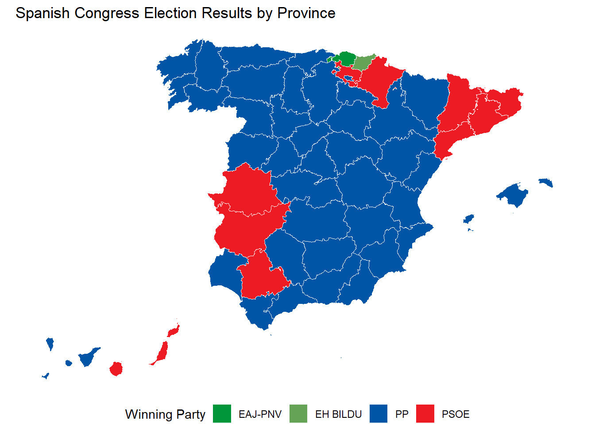
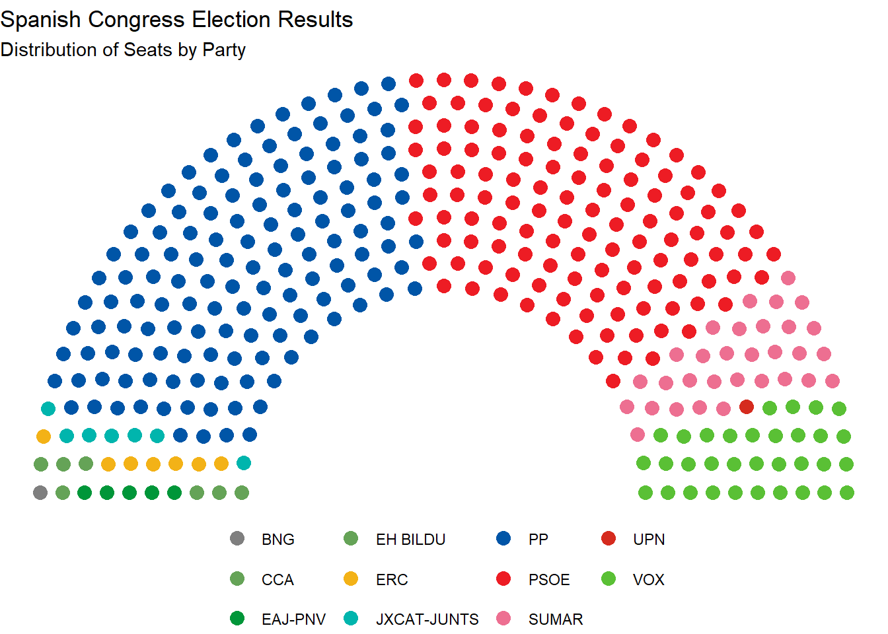

recod_parties(party_data, col_name_abbrev = "abbrev", col_name_candidacies = "full_name")04-Functionalities
In alignment with the package’s objective, the functions that compose it revolve around 3 main functionalities: utility functions that support the core operations of the package, functions that retrieve and process election data, and functions that allow us to use this data.
Utility functions
These are functions that ensure the correct working of the package. They may also be used by users to further analysis of their own. They work by handling data cleaning, standardization and format conversion.
Re coding parties recod_parties
This function re codes the names of candidacies and their abbreviations to make sure any aggregated analysis remains robust regardless of the naming variations candidacies. These variations are due to language variations across the Spanish territory and character variations from one candidacy inscription to another. The dictionary used for this codification was manually sourced by tracing the names and abbreviations of parties having achieved seats in the Spanish congress since 1982.
- Inputs: A data frame with party names and abbreviations.
- Outputs: A cleaned data frame with standardized party names and abbreviations.
parties_data: A data frame containing political party data with columns for party abbreviations and full names.
col_name_abbrev: A character string specifying the column name for party abbreviations in the input data frame. Defaults to “abbrev_candidacies”.
col_name_candidacies: A character string specifying the column name for party full names in the input data frame. Defaults to “name_candidacies”.
Extracting regional codes extract_code
This function extracts specific regional codes from standard poll station identifiers from the ministry of the interior data. This retrieves codes corresponding to different levels of geographical aggregations from poll station IDs.
- Inputs: A poll station identifier and the desired level of geographic aggregation.
- Outputs: A vector containing the extracted codes.
extract_code(id_INE_poll_station, level = "mun", full_cod = FALSE)
id_INE_poll_station: poll station code. It should be a string vector with tokens between 18 and 19 characters with 5 ‘-’ according to the INE/MIR format”).
level: aggregation level, for which we want to extract codes. It should be taken from the following values: ‘ccaa’, ‘prov’, ‘mun’, ‘mun-district’, ‘sec’ or ‘poll-station’
full_cod: flag to indicate if codes should be provided in a full format (including codes of more aggregated levels) or not. Defaults toFALSE.
Extracting election codes type_to_code_election
This function maps election types to their corresponding codes used by the Spanish Ministry of the Interior. It ensures that the correct data sets are accessed for the election type defined by the user. Although the package only supports congress and senate elections at the moment, this function accepts all election types stated by the official source.
- Inputs: A string indicating the type of election.
- Outputs: A string with the corresponding election code.
type_to_code_election(type_elec = "congress")
type_electype elections for which data is available. It should be one of the following values: “referendum”, “congress”, “senate”, “local”, “cabildo” (Canarian council) or “EU”.
Data retrieval functions
These functions are designed to fetch .rda files from the Pollspain-data (DeSmedt, 2024) repository. They work by matching the type of election, year and month provided to the corresponding directory within the repository.
Get election data
These are 6 functions that allow us to access different data sets from a corresponding election. The functions support retrieving data for both single and multiple elections. Unless specified otherwise the following arguments are always present in these functions:
type_elec: A vector or single value representing the types of elections.
year: A vector or single value representing the years of the elections to be considered.
month: A vector or single value representing the months of the elections to be considered.
get_mun_census_data
Retrieves municipal-level census data for specific elections in Spain
mun_census_data <- get_mun_census_data("congress", 2023, 7)tibble [8,131 × 22] (S3: tbl_df/tbl/data.frame)
$ cod_elec : chr [1:8131] "02" "02" "02" "02" ...
$ type_elec : chr [1:8131] "congress" "congress" "congress" "congress" ...
$ date_elec : Date[1:8131], format: "2023-07-23" "2023-07-23" ...
$ year : num [1:8131] 2023 2023 2023 2023 2023 ...
$ month : num [1:8131] 7 7 7 7 7 7 7 7 7 7 ...
$ id_INE_mun : 'glue' chr [1:8131] "01-04-001" "01-04-002" "01-04-003" "01-04-004" ...
$ id_MIR_mun : 'glue' chr [1:8131] "01-04-001" "01-04-002" "01-04-003" "01-04-004" ...
$ cod_INE_ccaa : chr [1:8131] "01" "01" "01" "01" ...
$ cod_MIR_ccaa : chr [1:8131] "01" "01" "01" "01" ...
$ ccaa : chr [1:8131] "Andalucía" "Andalucía" "Andalucía" "Andalucía" ...
$ cod_INE_prov : chr [1:8131] "04" "04" "04" "04" ...
$ prov : chr [1:8131] "Almería" "Almería" "Almería" "Almería" ...
$ cod_INE_mun : chr [1:8131] "001" "002" "003" "004" ...
$ mun : chr [1:8131] "Abla" "Abrucena" "Adra" "Albanchez" ...
$ cod_mun_jud_district: chr [1:8131] "013" "013" "029" "053" ...
$ cod_mun_prov_council: chr [1:8131] "013" "013" "029" "053" ...
$ n_poll_stations : num [1:8131] 2 2 29 1 1 13 1 2 1 1 ...
$ pop_res_mun : num [1:8131] 1247 1221 25300 735 615 ...
$ census_INE_mun : num [1:8131] 995 1034 17557 387 504 ...
$ census_counting_mun : num [1:8131] 995 1034 17557 387 504 ...
$ census_CERE_mun : num [1:8131] 0 0 0 0 0 0 0 0 0 0 ...
$ day : int [1:8131] 20 20 20 20 20 20 20 20 20 20 ...get_poll_station_data
Retrieves detailed data for individual polling stations for specified elections.
prec_round: Number of decimal places to round percentage values to (default is 3).
poll_station_data <- get_poll_station_data("congress", 2023, 7)tibble [60,366 × 23] (S3: tbl_df/tbl/data.frame)
$ id_elec : 'glue' chr [1:60366] "02-2023-07-23" "02-2023-07-23" "02-2023-07-23" "02-2023-07-23" ...
$ type_elec : chr [1:60366] "congress" "congress" "congress" "congress" ...
$ date_elec : Date[1:60366], format: "2023-07-23" "2023-07-23" ...
$ id_INE_poll_station: 'glue' chr [1:60366] "01-04-001-01-001-A" "01-04-001-01-001-B" "01-04-002-01-001-A" "01-04-002-01-001-B" ...
$ ccaa : chr [1:60366] "Andalucía" "Andalucía" "Andalucía" "Andalucía" ...
$ prov : chr [1:60366] "Almería" "Almería" "Almería" "Almería" ...
$ mun : chr [1:60366] "Abla" "Abla" "Abrucena" "Abrucena" ...
$ census_counting : num [1:60366] 429 566 445 589 627 607 691 770 852 643 ...
$ ballots_1 : num [1:60366] 187 239 193 259 299 279 285 334 380 251 ...
$ turnout_1 : num [1:60366] 43.6 42.2 43.4 44 47.7 ...
$ ballots_2 : num [1:60366] 249 315 249 325 388 378 373 432 484 327 ...
$ turnout_2 : num [1:60366] 58 55.7 56 55.2 61.9 ...
$ blank_ballots : num [1:60366] 1 3 1 2 3 6 1 2 3 7 ...
$ invalid_ballots : num [1:60366] 2 4 3 3 6 6 1 6 7 5 ...
$ party_ballots : num [1:60366] 328 409 340 438 469 450 499 515 577 400 ...
$ valid_ballots : num [1:60366] 329 412 341 440 472 456 500 517 580 407 ...
$ total_ballots : num [1:60366] 331 416 344 443 478 462 501 523 587 412 ...
$ turnout : num [1:60366] 77.2 73.5 77.3 75.2 76.2 ...
$ porc_valid : num [1:60366] 99.4 99 99.1 99.3 98.7 ...
$ porc_invalid : num [1:60366] 0.604 0.962 0.872 0.677 1.255 ...
$ porc_parties : num [1:60366] 99.7 99.3 99.7 99.5 99.4 ...
$ porc_blank : num [1:60366] 0.304 0.728 0.293 0.455 0.636 ...
$ pop_res_mun : num [1:60366] 1247 1247 1221 1221 25300 ...get_candidates_data
Retrieves detailed information about candidates who participated in specified elections, including their names, gender, and ballot order.
candidates_data <- get_candidates_data("congress", 2023, 7)tibble [5,099 × 12] (S3: tbl_df/tbl/data.frame)
$ cod_elec : chr [1:5099] "02" "02" "02" "02" ...
$ round_number : chr [1:5099] "1" "1" "1" "1" ...
$ province_code : chr [1:5099] "01" "01" "01" "01" ...
$ district_code : chr [1:5099] "9" "9" "9" "9" ...
$ municipality_code : chr [1:5099] "999" "999" "999" "999" ...
$ id_candidacies : chr [1:5099] "000001" "000001" "000001" "000001" ...
$ order_number : chr [1:5099] "001" "002" "003" "004" ...
$ candidate_type : chr [1:5099] "T" "T" "T" "T" ...
$ candidate_full_name: chr [1:5099] "Leire Orbañanos Martínez" "Iker Ruiz Basoco" "Aitor Menayo Hurtado" "Carolina Cruz Montesinos" ...
$ candidate_sex : chr [1:5099] "female" "male" "male" "female" ...
$ type_elec : chr [1:5099] "congress" "congress" "congress" "congress" ...
$ date_elec : Date[1:5099], format: "2023-07-23" "2023-07-23" ...get_candidacies_data
Retrieves candidacies data, allowing the option to include candidate details or not.
include_candidatesLogical flag indicating whether to include detailed candidates data. Default is FALSE.
candidates_data_with_details <- get_candidacies_data("congress",
2023,
7,
include_candidates = TRUE)tibble [5,099 × 17] (S3: tbl_df/tbl/data.frame)
$ cod_elec : chr [1:5099] "02" "02" "02" "02" ...
$ type_elec : chr [1:5099] "congress" "congress" "congress" "congress" ...
$ date_elec : Date[1:5099], format: "2023-07-23" "2023-07-23" ...
$ id_candidacies : chr [1:5099] "000001" "000001" "000001" "000001" ...
$ abbrev_candidacies : chr [1:5099] "FO" "FO" "FO" "FO" ...
$ name_candidacies : chr [1:5099] "FRENTE OBRERO" "FRENTE OBRERO" "FRENTE OBRERO" "FRENTE OBRERO" ...
$ cod_candidacies_prov: chr [1:5099] "000001" "000001" "000001" "000001" ...
$ cod_candidacies_ccaa: chr [1:5099] "000001" "000001" "000001" "000001" ...
$ cod_candidacies_nat : chr [1:5099] "000001" "000001" "000001" "000001" ...
$ round_number : chr [1:5099] "1" "1" "1" "1" ...
$ province_code : chr [1:5099] "01" "01" "01" "01" ...
$ district_code : chr [1:5099] "9" "9" "9" "9" ...
$ municipality_code : chr [1:5099] "999" "999" "999" "999" ...
$ candidate_order : chr [1:5099] "001" "002" "003" "004" ...
$ candidate_type : chr [1:5099] "T" "T" "T" "T" ...
$ candidate_full_name : chr [1:5099] "Leire Orbañanos Martínez" "Iker Ruiz Basoco" "Aitor Menayo Hurtado" "Carolina Cruz Montesinos" ...
$ candidate_sex : chr [1:5099] "female" "male" "male" "female" ...get_candidacy_ballot_data
Retrieves data on the ballots cast for each candidacy.
include_candidacy_names: Logical. If TRUE, the function will include the names of the candidacies by fetching additional data. Default is TRUE.
ballots_data <- get_candidacy_ballot_data("congress",
2023,
07,
include_candidacy_names = TRUE)tibble [647,309 × 18] (S3: tbl_df/tbl/data.frame)
$ cod_elec : chr [1:647309] "02" "02" "02" "02" ...
$ type_elec : chr [1:647309] "congress" "congress" "congress" "congress" ...
$ date_elec : Date[1:647309], format: "2023-07-23" "2023-07-23" ...
$ id_MIR_mun : 'glue' chr [1:647309] "01-04-001" "01-04-001" "01-04-001" "01-04-001" ...
$ cod_MIR_ccaa : chr [1:647309] "01" "01" "01" "01" ...
$ cod_INE_prov : chr [1:647309] "04" "04" "04" "04" ...
$ cod_INE_mun : chr [1:647309] "001" "001" "001" "001" ...
$ cod_mun_district : chr [1:647309] "01" "01" "01" "01" ...
$ cod_sec : chr [1:647309] "001" "001" "001" "001" ...
$ cod_poll_station : chr [1:647309] "A" "A" "A" "A" ...
$ turn : num [1:647309] 1 1 1 1 1 1 1 1 1 1 ...
$ id_candidacies : chr [1:647309] "000001" "000002" "000003" "000004" ...
$ ballots : num [1:647309] 1 122 0 1 124 56 0 0 0 24 ...
$ abbrev_candidacies : chr [1:647309] "FO" "PSOE" "PUM+J" "ALM" ...
$ name_candidacies : chr [1:647309] "FRENTE OBRERO" "PARTIDO SOCIALISTA OBRERO ESPAÑOL" "POR UN MUNDO MÁS JUSTO" "ALMERIENSES - REGIONALISTAS PRO ALMERÍA" ...
$ cod_candidacies_prov: chr [1:647309] "000001" "000002" "000003" "000004" ...
$ cod_candidacies_ccaa: chr [1:647309] "000001" "000002" "000003" "000004" ...
$ cod_candidacies_nat : chr [1:647309] "000001" "000002" "000003" "000004" ...get_CERA_data
Aggregates Census of Absent Residents (CERA) data, which is crucial for analyzing voter turnout at various administrative levels. It summarizes key metrics such as census counts and voter turnout percentages.
election_data: A data frame containing the election data to be processed.
id_col: The name of the column containing the poll station ID. Defaults toid_INE_poll_station
level: The hierarchical level for data aggregation. Can be one of “all”, “ccaa”, “prov”, “mun”, “mun_district”, “sec”, or “poll_station”. Defaults to “all”.
prec_round: The precision for rounding percentages. Defaults to 3.
cera_data_prov <- get_CERA_data(poll_station_data,
id_col = "id_INE_poll_station",
level = "prov")tibble [52 × 8] (S3: tbl_df/tbl/data.frame)
$ id_elec : 'glue' chr [1:52] "02-2023-07-23" "02-2023-07-23" "02-2023-07-23" "02-2023-07-23" ...
$ cod_INE_ccaa : 'glue' chr [1:52] "01" "01" "01" "01" ...
$ cod_INE_prov : 'glue' chr [1:52] "04" "11" "14" "18" ...
$ type_elec : chr [1:52] "congress" "congress" "congress" "congress" ...
$ date_elec : Date[1:52], format: "2023-07-23" "2023-07-23" ...
$ census_cera : num [1:52] 516114 1017958 645288 765478 402504 ...
$ total_ballots_cera: num [1:52] 321424 641933 453432 504830 260172 ...
$ turnout_cera : num [1:52] 62.3 63.1 70.3 66 64.6 ...Get survey data
get_survey_data
Retrieves and processes survey data for a specified range of years and months. This function also applies user-defined filters (e.g., days to election, polling firm, sample size) and handles various conditions like excluding exit polls and selecting specific parties while ensuring the data is in a consistent format.
year: A single year or a vector of years for which survey data should be retrieved.
min_days_to: Minimum number of days to the election for filtering (default is NULL). If specified, only surveys conducted at least this many days before the election are included.
max_days_to: Maximum number of days to the election for filtering (default is NULL). If specified, only surveys conducted no more than this many days before the election are included.
select_polling_firm: String matching in polling_firm column (default is “all”). If specified, only surveys from polling firms matching this string are included.
select_media: String matching in media column (default is “all”). If specified, only surveys from media outlets matching this string are included.
select_parties: Character vector specifying which columns (parties) to keep (default is “all”). If specified, only columns corresponding to the specified parties are retained.
min_field_days: Minimum number of fieldwork days (default is NULL). If specified, only surveys with at least this many days of fieldwork are included.
max_field_days: Maximum number of fieldwork days (default is NULL). If specified, only surveys with no more than this many days of fieldwork are included.
min_size: Minimum sample size (default is NULL). If specified, only surveys with at least this sample size are included.
include_media: Whether to include media information (default is TRUE). If set to FALSE, media information will be excluded from the results.
include_exit_polls: Whether to include exit polls in the data (default is TRUE). If set to FALSE, exit polls will be excluded from the results.
survey_data <- get_survey_data(year = 2023)tibble [1,340 × 11] (S3: tbl_df/tbl/data.frame)
$ polling_firm : chr [1:1340] "Ipsos" "Ipsos" "Ipsos" "Ipsos" ...
$ media : chr [1:1340] NA NA NA NA ...
$ sample_size : num [1:1340] NA NA NA NA 1200 1200 1200 1200 NA NA ...
$ turnout : num [1:1340] NA NA NA NA NA NA NA NA NA NA ...
$ fieldwork_start : Date[1:1340], format: "2023-07-22" "2023-07-22" ...
$ fieldwork_end : Date[1:1340], format: "2023-07-22" "2023-07-22" ...
$ date_elec : Date[1:1340], format: "2023-07-23" "2023-07-23" ...
$ fieldwork_duration: num [1:1340] 0 0 0 0 2 2 2 2 2 2 ...
$ is_exit_poll : logi [1:1340] FALSE FALSE FALSE FALSE FALSE FALSE ...
$ party : chr [1:1340] "PSOE" "PP" "VOX" "SUMAR" ...
$ vote_share : num [1:1340] 28.6 34.4 11.8 13.5 28.8 31.9 13.1 14.2 27.9 37.5 ...Data use functions
These functions are designed to conduct some analysis on the data provided by the package. From vizualizations to seat asignations and house effect analysis.
Election data
aggregate_election_data
Summarizes election data by various geographic levels, such as Autonomous Communities (CCAA), Provinces, and Municipalities. It is useful for aggregating results by geographical levels, candidacies or both.
- Inputs: A data frame with election data and parameters for aggregation.
- Outputs: A data frame with aggregated election data by the specified level.
ballots_data: A data frame containing the election data, including ballots and candidacy information.
scope: The geographic level for data aggregation. Can be one of “ccaa”, “prov”, or “mun”. Defaults to “ccaa”.
group_by_candidacy: A logical value indicating whether to group data by candidacy name name_candidacies. Defaults to TRUE.
aggregated_data <- aggregate_election_data(ballots_data,
scope = "prov",
group_by_candidacy = TRUE)str(aggregated_data)tibble [837 × 10] (S3: tbl_df/tbl/data.frame)
$ year : num [1:837] 2023 2023 2023 2023 2023 ...
$ cod_elec : chr [1:837] "02" "02" "02" "02" ...
$ type_elec : chr [1:837] "congress" "congress" "congress" "congress" ...
$ date_elec : Date[1:837], format: "2023-07-23" "2023-07-23" ...
$ id_candidacies : chr [1:837] "000001" "000001" "000001" "000001" ...
$ abbrev_candidacies: chr [1:837] "FO" "FO" "FO" "FO" ...
$ name_candidacies : chr [1:837] "FRENTE OBRERO" "FRENTE OBRERO" "FRENTE OBRERO" "FRENTE OBRERO" ...
$ cod_MIR_ccaa : chr [1:837] "01" "01" "01" "01" ...
$ cod_INE_prov : chr [1:837] "04" "11" "14" "18" ...
$ total_ballots : num [1:837] 500 1225 701 658 410 ...allocate_seats_dhondt
Applies the D’Hondt method to allocate seats in the Spanish Congress based on election results. It aggregates votes by province, applies the D’Hondt method (European Parliament, 2019), and returns the final seat distribution. This function has recod_parties embeded into it in order to make the seal allocations result accurate.
- Inputs: A data frame with vote counts and the desired level of aggregation.
- Outputs: A data frame with the final seat distribution.
last_election_ballots: A data frame containing the votes for each polling station.
level: The aggregation level for the final seat distribution. Options are"prov"(default) for provincial level,"ccaa"for autonomous community level, and"national"for national level.
final_seat_distribution <- allocate_seats_dhondt(last_election_ballots = ballots_data,
level = "ccaa")plot_election_results
Generates a map of Spain visualizing election results by either province or Autonomous Community. The map colors each geographical region according to the party with the most votes in that area.
- Inputs: A data frame with election results and the desired level of geographic visualization.
- Outputs: A
ggplot2object displaying the election results on a map of Spain.
election_data: A data frame containing the election results. It should include the following columns: cod_INE_prov,prov, cod_MIR_ccaa, abbrev_candidacies, name_candidacies, ccaa, ballots.
level: A character string indicating the geographic level to plot. Options are “prov” (default) for province-level results, and “ccaa” for autonomous community-level results.
colors_urlA character string specifying the URL from which to download the color codes for the political parties. Default is “https://github.com/mikadsr/Pollspain-data/raw/main/get%20auxiliary%20data/party_colors_hex.rda”.
plot_election_results(election_data = ballots_data, level = "prov")Warning: package 'ggplot2' was built under R version 4.3.3
Attaching package: 'dplyr'The following objects are masked from 'package:stats':
filter, lagThe following objects are masked from 'package:base':
intersect, setdiff, setequal, unionWarning: package 'mapSpain' was built under R version 4.3.3
plot_parliament_distribution
Generates a semicircle plot of parliamentary seat distribution using the `ggparliament` package. It visualizes the number of seats allocated to each party.
- Inputs: A data frame with seat distribution data.
- Outputs: A
ggplot2object representing the seat distribution in a semicircle plot.
election_data: A data frame processed by theallocate_seats_dhondt()function
colors_url: A string URL pointing to the location of the RDA file containing party colors. Default is set to “https://github.com/mikadsr/Pollspain-data/raw/main/get%20auxiliary%20data/party_colors_hex.rda”.
plot_parliament_distribution(election_data = final_seat_distribution)
References
DeSmedt, M. (2024). Pollspain-data. https://github.com/mikadsr/Pollspain-data.
European Parliament. (2019). Understanding the d’hondt method (Briefing No. 637966). Brussels: European Parliament. Retrieved from European Parliament website: https://www.europarl.europa.eu/RegData/etudes/BRIE/2019/637966/EPRS_BRI(2019)637966_EN.pdf